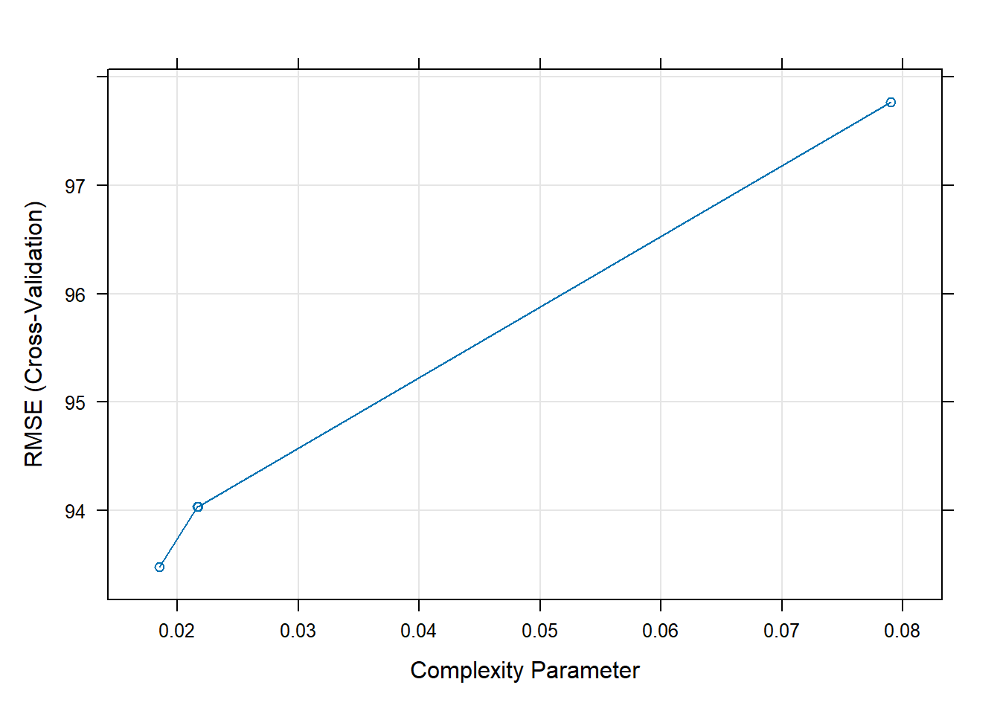
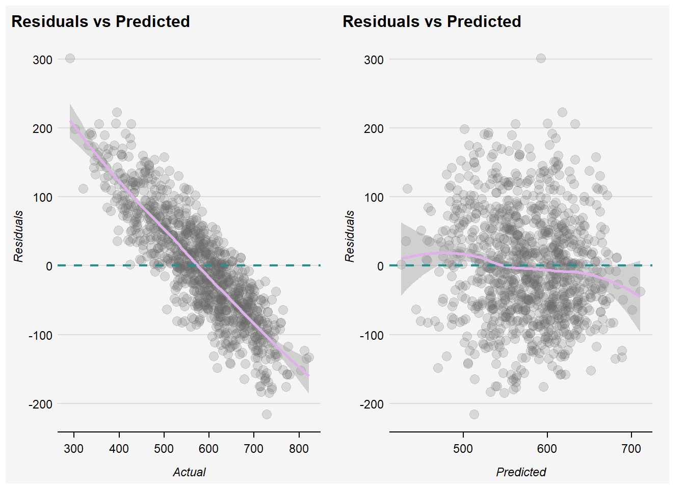
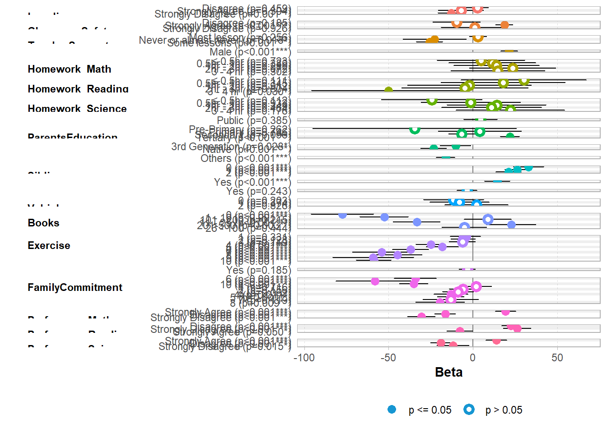
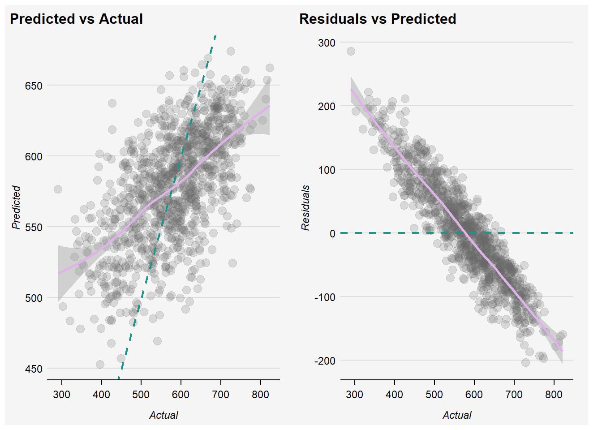

pacman::p_load(tidyverse,
ggplot2, patchwork, plotly, urbnthemes,
htmltools, reactable, gtsummary,
corrplot,
lmtest, randomForest, caret, tidymodels,
MASS,
performance
)Take-home Exercise 4: Prototyping Modules for Shiny Application
1 Overview
International large-scale assessments, such as PISA, provide structured and static data. With the goal of exploring which factors have a higher relevance in predicting student performance, this post proposes the use of multiple linear regression and random forest approach to detect and analyse factors linked to academic performance.
Specifically, this post details the steps, packages, prototypes, including the detailed breakdown of codes used for UI and Server in R Shiny as part of the model building module in preparation for the final Shiny app.
2 Loading Data and Packages
2.1 Packages
The packages used as part of this exercise includes:
| Package | Description |
|---|---|
| tidyverse | For data wrangling, and collection of packages for modelling and machine learning via tidymodels |
| ggplot2, patchwork, urbnthemes | For plots and setting a consistent theme throughout this exercise. |
| htmltools, reactable, gtsummary | For dynamic and static data tables |
| corrplot | For correlation matrix |
| lmtest, randomForest, caret, tidymodels | |
| MASS | |
| performance | For assessment of regression models performance. |
2.2 The PISA Survey Students Questionnaire
The code chunk below loads ]our dataset into R environment, in the form of a csv file created following minor data cleaning and wrangling documented here.
stu <- read_csv("data/stu_SG_rcd.csv")
stu_encode <- read_csv("data/stu_SG_encode.csv")Rows: 6,606
Columns: 25
$ Loneliness <chr> "Disagree", "Disagree", "Disagree", NA, "Strongly D…
$ ClassroomSafety <chr> "Agree", "Strongly Agree", "Agree", "Agree", "Stron…
$ TeacherSupport <chr> "Most lesson", "Most lesson", "Most lesson", "Most …
$ Gender <chr> "Female", "Male", "Male", "Male", "Female", "Female…
$ Homework_Math <chr> "≤ 0.5hr", "1hr - 2hr", "0.5hr - 1hr", "1hr - 2hr",…
$ Homework_Reading <chr> "≤ 0.5hr", "0.5hr - 1hr", "1hr - 2hr", "≤ 0.5hr", "…
$ Homework_Science <chr> "0.5hr - 1hr", "1hr - 2hr", "1hr - 2hr", "0.5hr - 1…
$ SchoolType <chr> "Public", "Public", "Public", "Public", "Public", "…
$ ParentsEducation <chr> "Tertiary", "Post-Secondary", "Secondary", "Post-Se…
$ Immigration <chr> "Native", "Native", "Native", "Native", "Native", "…
$ HomeLanguage <chr> "English", "English", "Others", "Others", "English"…
$ Sibling <chr> "≥3", "≥3", "1", "≥3", "≥3", "2", "1", "1", "2", "≥…
$ Aircon <chr> "No", "Yes", "Yes", "No", "No", "Yes", "Yes", "Yes"…
$ Helper <chr> "No", "Yes", "No", "No", "No", "No", "No", "No", "Y…
$ Vehicle <chr> "1", "0", "1", "0", "1", "1", "1", "0", "2", "2", "…
$ Books <chr> ">500", "26 - 100", "26 - 100", "11 - 25", "1 - 10"…
$ Exercise <dbl> 1, 4, 2, 5, 9, 1, 2, 0, 3, 5, 1, 2, 5, 2, 4, 0, 2, …
$ OwnRoom <chr> "No", "Yes", "Yes", "No", "No", "No", "Yes", "Yes",…
$ FamilyCommitment <dbl> 10, 2, 0, 10, 5, 5, 7, 0, 0, 4, 2, 2, 10, 0, 10, 0,…
$ Preference_Math <chr> "Disagree", "Strongly Agree", "Agree", "Disagree", …
$ Preference_Reading <chr> "Agree", "Agree", "Disagree", "Agree", "Strongly Ag…
$ Preference_Science <chr> "Agree", "Agree", "Agree", "Agree", "Strongly Agree…
$ Math <dbl> 605.2533, 689.9528, 676.7768, 401.0528, 436.1151, 5…
$ Reading <dbl> 667.4296, 627.6078, 582.9252, 361.3969, 475.6763, 4…
$ Science <dbl> 639.7873, 672.0703, 660.0384, 343.6425, 479.2390, 4…The flowchart below details the features for this model building module.
flowchart TD
A[Building Explanatory Model]-->B[1. Checking for Multicollinearity, Variable Selection]
B-->C[2. Model Building]
C-.->C1[2a. Multiple Linear Regression]
C-.-> C2[2b. Random Forest]
C1-.->F[3. Visual Model Diagnostic, Assumption Checking]
C2-.->F
F -->E[4. Statistical Model Evaluation]
E-->D[5. Variable Importance]
3 Multicollinearity
Regression analysis requires numerical variables. To include categorical variables in a regression model, we will need to perform dummy coding.
In the code chunk below, we use recode() to create dummy variables for SchoolType, Aircon, and Helper variables from our dataset. The remaining variables in our dataset are already in numerical datatype.
Show the code
# Data for correlation matrix
cols <- c('SchoolType', 'Aircon', 'Helper')
stu_encode <- stu_encode %>%
mutate(SchoolType = recode(SchoolType,
"SGP01" = 1,
"SGP03" = 2),
Aircon = recode(Aircon,
"7020001" = 1,
"7020002" = 2),
Helper = recode(Helper,
"7020001" = 1,
"7020002" = 2))cor() calculates correlation coefficients, the function needs two inputs: the x-coordinates and the y-coordinates. The argument use = "complete.obs" excludes missing values from the calculation of the correlation coefficient. Altogether, the code chunk below returns the correlation coefficient for each pair of survey participants who had valid responses for each question we have narrowed down to.
stu.cor <- cor(stu_encode[, 1:22], #<< cor(dataset()[,input$variables], checkbox for variable selection
use = "pairwise.complete.obs", #<< input$corUse, allow user to choose "complete.obs", "na.or.complete"
method = "pearson") #<< input$corMethod for selection of other methods like Kendall's Tau or Spearman's Rhoformals() function returns the argument list of the function specified. This can be used in the sidebar to display the options for user selection.
eval(formals(cor)$method)[1] "pearson" "kendall" "spearman"par(bg = "#f5f5f5")
stu.sig = cor.mtest(stu.cor,
conf.level= .95) #<< input$sigLevel for user to choose confidence levels
## CORRPLOT ##
#~~ ui: mainPanel(plotOutput("corrplot")) ~~#
#~~ server: output$corrplot <- renderPlot({...}) ~~#
corrplot(stu.cor,
method = "number", #<< input$corMethod for other alternatives like number, colour, ellipse
type = "lower",
diag = FALSE,
tl.col = "#7C6D62",
tl.srt = 45,
p.mat = stu.sig$p, #<< if(input$sigTest) stu.sig$p else NULL
sig.level = 0.05, #<< ?? Check with Prof Kam if this should be derived?
tl.cex = 0.8,
number.cex = 0.8,
cl.cex = 0.8,
cl.ratio = 0.1,
bg="#f5f5f5") #<< To change according to Shiny page's background
| Function | Feature | UI | Server |
|---|---|---|---|
| stu.cor | Checkbox for variable selection; sortable package allows drag-and-drop to order variables | Within sidebarPanel(): sortableCheckboxGroupInput( |
stu_bm <- eventReactive(input$bm_action, cor(stu_bm, use = |
| Treatment of NA values | Within mainPanel() > tabsetPanel() > tabPanel(“Collinearity”, column(3, []), column(9, plotOutput(“corrPlot”, height = 400))): selectInput( |
input$corUse |
|
| Correlation Method | Within tabsetPanel(): selectInput( |
input$corMethod |
|
| cor.mtest | To indicate if user wants to show statistical significance; if yes, allow option to set confidence level. | Within tabsetPanel(): checkboxInput(“sigTest”, “Show Significance Test?”), ~Only show option to select significance level if Significance Test is select~ |
input$confLevel |
| corrplot | Plot display method | Within tabsetPanel(): selectInput(“plotMethod”, “Plot Method”, list(“mixed”, all = eval(formals(corrplot)$method)), “number”) |
input$corMethod |
| Build model button | Build model button once selection is complete. | actionButton(inputId = “bm_action”, label = “Click to start building”) |
4 Model Building
The goal of training the model is to find a function that performs some kind of calculation to the \(x\) values (i.e. independent variables) that produces the result \(y\) (i.e. dependent variable). We do this by applying a machine learning algorithm that tries to fit the \(x\) values to a calculation that produces \(y\) reasonably accurately for all of the cases in the training dataset.
To train the model, we start with a data sample containing the independent/explanatory variables as well as known values for the subject scores. We’ll then split this data sample into two subsets:
A training dataset to which we’ll apply an algorithm that determines a function encapsulating the relationship between the independent variables and the known \(y\) values.
A validation or test dataset that we can use to evaluate the model by using it to generate predictions for the label and comparing them to the actual known \(y\) values.
Multiple Linear Regression
## Data for Multiple Linear Regression ##
# Remove missing cases & convert variables to factor datatype our dataset
stu <- stu %>%
na.omit() %>%
mutate(across(1:22, as.factor))
# Set the seed before splitting the data
set.seed(1234)
stu_lm_dataset <- stu %>%
dplyr::select(c(1:22, "Math")) #<< User should be able to pick subject & vars of interest here
# Split the data into training and test
index <- createDataPartition(stu_lm_dataset$Math, #<< input$bm_target
p = 0.8, #<< input$rf_partition
list = FALSE)
train_lm <- stu_lm_dataset[index, ]
test_lm <- stu_lm_dataset[-index, ]stu_lm <- lm(Math ~ .,
data = train_lm)
summary(stu_lm)
Call:
lm(formula = Math ~ ., data = train_lm)
Residuals:
Min 1Q Median 3Q Max
-291.214 -48.322 1.319 52.123 244.755
Coefficients:
Estimate Std. Error t value Pr(>|t|)
(Intercept) 551.8718 20.8600 26.456 < 2e-16 ***
LonelinessDisagree 2.5512 3.4458 0.740 0.459116
LonelinessStrongly Agree -7.0683 6.8721 -1.029 0.303757
LonelinessStrongly Disagree -12.8584 3.9284 -3.273 0.001072 **
ClassroomSafetyDisagree -9.6302 7.2669 -1.325 0.185174
ClassroomSafetyStrongly Agree 18.5804 2.6087 7.123 1.25e-12 ***
ClassroomSafetyStrongly Disagree 0.9294 10.0135 0.093 0.926056
TeacherSupportMost lesson 2.9878 2.6314 1.135 0.256248
TeacherSupportNever or almost never -22.7463 9.6171 -2.365 0.018067 *
TeacherSupportSome lessons -25.7367 3.9660 -6.489 9.67e-11 ***
GenderMale 21.4709 2.5025 8.580 < 2e-16 ***
Homework_Math≤ 0.5hr 4.6984 13.2741 0.354 0.723392
Homework_Math0.5hr - 1hr 11.4836 13.0857 0.878 0.380231
Homework_Math1hr - 2hr 13.9989 12.9527 1.081 0.279863
Homework_Math2hr - 3hr 23.5802 13.0992 1.800 0.071914 .
Homework_Math3 - 4 hr 14.7797 14.3215 1.032 0.302134
Homework_Reading≤ 0.5hr 30.1525 18.9299 1.593 0.111272
Homework_Reading0.5hr - 1hr 17.8417 18.8849 0.945 0.344836
Homework_Reading1hr - 2hr -2.0787 18.8232 -0.110 0.912071
Homework_Reading2hr - 3hr -4.7755 19.2406 -0.248 0.803994
Homework_Reading3 - 4 hr -50.2244 23.1988 -2.165 0.030449 *
Homework_Science≤ 0.5hr -24.3822 15.3425 -1.589 0.112095
Homework_Science0.5hr - 1hr -1.2825 15.1386 -0.085 0.932492
Homework_Science1hr - 2hr 14.0454 14.9985 0.936 0.349098
Homework_Science2hr - 3hr 11.0538 15.1042 0.732 0.464311
Homework_Science3 - 4 hr 22.1992 16.4153 1.352 0.176341
SchoolTypePublic 4.4013 5.0686 0.868 0.385255
ParentsEducationPre-Primary -34.5726 30.8487 -1.121 0.262475
ParentsEducationPrimary 4.0903 12.6230 0.324 0.745929
ParentsEducationSecondary -6.6755 4.0064 -1.666 0.095750 .
ParentsEducationTertiary 21.8538 2.8699 7.615 3.26e-14 ***
Immigration3rd Generation -10.2920 4.6848 -2.197 0.028084 *
ImmigrationNative -23.3795 3.9728 -5.885 4.31e-09 ***
HomeLanguageOthers -16.2453 2.7555 -5.896 4.04e-09 ***
Sibling0 32.9805 4.6137 7.148 1.04e-12 ***
Sibling1 26.1069 3.5843 7.284 3.89e-13 ***
Sibling2 21.1400 3.8447 5.498 4.07e-08 ***
AirconYes 14.3309 3.8243 3.747 0.000181 ***
HelperYes -3.4730 2.9762 -1.167 0.243321
Vehicle0 -11.5371 9.0683 -1.272 0.203362
Vehicle1 -7.9559 8.9392 -0.890 0.373517
Vehicle2 2.1074 9.6100 0.219 0.826437
Books0 -77.4746 9.4449 -8.203 3.12e-16 ***
Books1 - 10 -52.6015 7.3374 -7.169 8.94e-13 ***
Books101 - 200 8.7875 7.0926 1.239 0.215426
Books11 - 25 -33.3705 7.1460 -4.670 3.11e-06 ***
Books201-500 22.6062 7.5130 3.009 0.002638 **
Books26 - 100 -5.2056 6.7946 -0.766 0.443639
Exercise1 -4.4838 4.6101 -0.973 0.330813
Exercise2 -5.7526 3.7830 -1.521 0.128419
Exercise3 -6.2977 4.0345 -1.561 0.118605
Exercise4 -25.0411 4.4294 -5.653 1.68e-08 ***
Exercise5 -18.1443 4.8147 -3.769 0.000167 ***
Exercise6 -36.9717 5.4735 -6.755 1.64e-11 ***
Exercise7 -54.0923 8.9186 -6.065 1.44e-09 ***
Exercise8 -44.6469 7.4490 -5.994 2.23e-09 ***
Exercise9 -59.2177 12.2166 -4.847 1.30e-06 ***
Exercise10 -58.7954 5.2654 -11.166 < 2e-16 ***
OwnRoomYes -3.3960 2.5627 -1.325 0.185194
FamilyCommitment1 1.7342 4.7736 0.363 0.716409
FamilyCommitment2 -5.8417 4.1149 -1.420 0.155787
FamilyCommitment3 -8.7969 4.7114 -1.867 0.061954 .
FamilyCommitment4 -13.0866 5.1504 -2.541 0.011094 *
FamilyCommitment5 -13.1598 4.0636 -3.238 0.001211 **
FamilyCommitment6 -34.1454 6.3571 -5.371 8.26e-08 ***
FamilyCommitment7 -13.1554 8.4429 -1.558 0.119272
FamilyCommitment8 -19.4879 7.4835 -2.604 0.009245 **
FamilyCommitment9 -58.1090 11.7275 -4.955 7.53e-07 ***
FamilyCommitment10 -35.2369 4.3553 -8.091 7.78e-16 ***
Preference_MathDisagree -16.4885 3.1734 -5.196 2.14e-07 ***
Preference_MathStrongly Agree 19.3470 3.1054 6.230 5.14e-10 ***
Preference_MathStrongly Disagree -30.6031 4.2892 -7.135 1.14e-12 ***
Preference_ReadingDisagree 22.3632 2.7205 8.220 2.70e-16 ***
Preference_ReadingStrongly Agree -7.8580 4.0020 -1.964 0.049654 *
Preference_ReadingStrongly Disagree 26.1744 4.2349 6.181 7.01e-10 ***
Preference_ScienceDisagree -19.1954 3.0927 -6.207 5.95e-10 ***
Preference_ScienceStrongly Agree 13.9347 3.1267 4.457 8.55e-06 ***
Preference_ScienceStrongly Disagree -11.8533 4.8573 -2.440 0.014718 *
---
Signif. codes: 0 '***' 0.001 '**' 0.01 '*' 0.05 '.' 0.1 ' ' 1
Residual standard error: 74.6 on 4050 degrees of freedom
Multiple R-squared: 0.4408, Adjusted R-squared: 0.4302
F-statistic: 41.46 on 77 and 4050 DF, p-value: < 2.2e-16There are no results for the first response to each variable as the first response is treated as the reference category/level which represents the default level that other levels are measured against. The estimated slope value of 20.7774 for GenderMale is the added effect of male respondents on the yield, i.e. the mean of the male Math results is 20.7774 higher than the mean of the Female results.
stu_lm %>%
tbl_regression() %>%
add_glance_source_note(include = c(r.squared,
adj.r.squared,
AIC, BIC)) | Characteristic | Beta | 95% CI1 | p-value |
|---|---|---|---|
| Loneliness | |||
| Agree | — | — | |
| Disagree | 2.6 | -4.2, 9.3 | 0.5 |
| Strongly Agree | -7.1 | -21, 6.4 | 0.3 |
| Strongly Disagree | -13 | -21, -5.2 | 0.001 |
| ClassroomSafety | |||
| Agree | — | — | |
| Disagree | -9.6 | -24, 4.6 | 0.2 |
| Strongly Agree | 19 | 13, 24 | <0.001 |
| Strongly Disagree | 0.93 | -19, 21 | >0.9 |
| TeacherSupport | |||
| Every lesson | — | — | |
| Most lesson | 3.0 | -2.2, 8.1 | 0.3 |
| Never or almost never | -23 | -42, -3.9 | 0.018 |
| Some lessons | -26 | -34, -18 | <0.001 |
| Gender | |||
| Female | — | — | |
| Male | 21 | 17, 26 | <0.001 |
| Homework_Math | |||
| > 4hr | — | — | |
| ≤ 0.5hr | 4.7 | -21, 31 | 0.7 |
| 0.5hr - 1hr | 11 | -14, 37 | 0.4 |
| 1hr - 2hr | 14 | -11, 39 | 0.3 |
| 2hr - 3hr | 24 | -2.1, 49 | 0.072 |
| 3 - 4 hr | 15 | -13, 43 | 0.3 |
| Homework_Reading | |||
| > 4hr | — | — | |
| ≤ 0.5hr | 30 | -7.0, 67 | 0.11 |
| 0.5hr - 1hr | 18 | -19, 55 | 0.3 |
| 1hr - 2hr | -2.1 | -39, 35 | >0.9 |
| 2hr - 3hr | -4.8 | -42, 33 | 0.8 |
| 3 - 4 hr | -50 | -96, -4.7 | 0.030 |
| Homework_Science | |||
| > 4hr | — | — | |
| ≤ 0.5hr | -24 | -54, 5.7 | 0.11 |
| 0.5hr - 1hr | -1.3 | -31, 28 | >0.9 |
| 1hr - 2hr | 14 | -15, 43 | 0.3 |
| 2hr - 3hr | 11 | -19, 41 | 0.5 |
| 3 - 4 hr | 22 | -10, 54 | 0.2 |
| SchoolType | |||
| Private | — | — | |
| Public | 4.4 | -5.5, 14 | 0.4 |
| ParentsEducation | |||
| Post-Secondary | — | — | |
| Pre-Primary | -35 | -95, 26 | 0.3 |
| Primary | 4.1 | -21, 29 | 0.7 |
| Secondary | -6.7 | -15, 1.2 | 0.10 |
| Tertiary | 22 | 16, 27 | <0.001 |
| Immigration | |||
| 2nd Generation | — | — | |
| 3rd Generation | -10 | -19, -1.1 | 0.028 |
| Native | -23 | -31, -16 | <0.001 |
| HomeLanguage | |||
| English | — | — | |
| Others | -16 | -22, -11 | <0.001 |
| Sibling | |||
| ≥3 | — | — | |
| 0 | 33 | 24, 42 | <0.001 |
| 1 | 26 | 19, 33 | <0.001 |
| 2 | 21 | 14, 29 | <0.001 |
| Aircon | |||
| No | — | — | |
| Yes | 14 | 6.8, 22 | <0.001 |
| Helper | |||
| No | — | — | |
| Yes | -3.5 | -9.3, 2.4 | 0.2 |
| Vehicle | |||
| ≥3 | — | — | |
| 0 | -12 | -29, 6.2 | 0.2 |
| 1 | -8.0 | -25, 9.6 | 0.4 |
| 2 | 2.1 | -17, 21 | 0.8 |
| Books | |||
| >500 | — | — | |
| 0 | -77 | -96, -59 | <0.001 |
| 1 - 10 | -53 | -67, -38 | <0.001 |
| 101 - 200 | 8.8 | -5.1, 23 | 0.2 |
| 11 - 25 | -33 | -47, -19 | <0.001 |
| 201-500 | 23 | 7.9, 37 | 0.003 |
| 26 - 100 | -5.2 | -19, 8.1 | 0.4 |
| Exercise | |||
| 0 | — | — | |
| 1 | -4.5 | -14, 4.6 | 0.3 |
| 2 | -5.8 | -13, 1.7 | 0.13 |
| 3 | -6.3 | -14, 1.6 | 0.12 |
| 4 | -25 | -34, -16 | <0.001 |
| 5 | -18 | -28, -8.7 | <0.001 |
| 6 | -37 | -48, -26 | <0.001 |
| 7 | -54 | -72, -37 | <0.001 |
| 8 | -45 | -59, -30 | <0.001 |
| 9 | -59 | -83, -35 | <0.001 |
| 10 | -59 | -69, -48 | <0.001 |
| OwnRoom | |||
| No | — | — | |
| Yes | -3.4 | -8.4, 1.6 | 0.2 |
| FamilyCommitment | |||
| 0 | — | — | |
| 1 | 1.7 | -7.6, 11 | 0.7 |
| 2 | -5.8 | -14, 2.2 | 0.2 |
| 3 | -8.8 | -18, 0.44 | 0.062 |
| 4 | -13 | -23, -3.0 | 0.011 |
| 5 | -13 | -21, -5.2 | 0.001 |
| 6 | -34 | -47, -22 | <0.001 |
| 7 | -13 | -30, 3.4 | 0.12 |
| 8 | -19 | -34, -4.8 | 0.009 |
| 9 | -58 | -81, -35 | <0.001 |
| 10 | -35 | -44, -27 | <0.001 |
| Preference_Math | |||
| Agree | — | — | |
| Disagree | -16 | -23, -10 | <0.001 |
| Strongly Agree | 19 | 13, 25 | <0.001 |
| Strongly Disagree | -31 | -39, -22 | <0.001 |
| Preference_Reading | |||
| Agree | — | — | |
| Disagree | 22 | 17, 28 | <0.001 |
| Strongly Agree | -7.9 | -16, -0.01 | 0.050 |
| Strongly Disagree | 26 | 18, 34 | <0.001 |
| Preference_Science | |||
| Agree | — | — | |
| Disagree | -19 | -25, -13 | <0.001 |
| Strongly Agree | 14 | 7.8, 20 | <0.001 |
| Strongly Disagree | -12 | -21, -2.3 | 0.015 |
| R² = 0.441; Adjusted R² = 0.430; AIC = 47,395; BIC = 47,895 | |||
| 1 CI = Confidence Interval | |||
Random Forest & Tunable Parameters
## Data for Random Forest ##
# Set the seed before splitting the data
set.seed(1234)
# Select columns based on user preference
stu_rf_dataset <- stu %>%
dplyr::select(c(1:22, "Math")) #<< User should be able to pick subject & vars of interest here
# Split the data into training and test
index <- createDataPartition(stu_rf_dataset$Math, #<< input$bm_target
p = 0.8, #<< input$rf_partition
list = FALSE)
train_rf <- stu_rf_dataset[index, ]
test_rf <- stu_rf_dataset[-index, ]stu_rf <- randomForest(Math ~., #<< input$bm_target ~.
data = train_rf,
importance = TRUE,
ntree = 500)| Function | Feature | UI | Server (using RF as example, similar process for LM) |
|---|---|---|---|
| stu_rf/stu_lm | Select subject, variables (synchronised with variable selection for correlation matrix in Section 3), partition size, and number of trees | Within sidebarPanel(): selectInput( Within mainPanel() > tabsetPanel() > sliderInput( Within mainPanel() > tabsetPanel() > numericInput(inputId = “rf_treenum”, |
stu_rf_dataset <- eventReactive( rf_index <- eventReactive( train_rf <- eventReactive( test_rf <- eventReactive( stu_rf <- eventReactive( |
5 Visual Model Diagnostics
Now that we’ve trained the models, we can use it to predict scores for the test data we held back using predict(). Then we can compare these predictions to the actual values to evaluate how well (or not) the models are working. We can get a better indication by visualising a scatter plot that compares the predictions to the actual scores and residuals. We’ll also overlay a trend line to get a general sense for how well the predicted values align with the true values.
Multiple Linear Regression
predict_lm <- bind_cols(
Actual = test_lm$Math,
Predicted = predict(stu_lm, newdata = test_lm),
Residuals = predict(stu_lm, newdata = test_lm) - test_lm$Math)## DIAGNOSTIC PLOT - ACTUAL VS PREDICTED ##
lm_predvsactual <-
ggplot(data = predict_lm,
aes(x = Actual, y = Predicted)) +
geom_point(alpha = 0.2, color = "grey40") +
geom_smooth(method = "loess", formula = "y ~ x", color="#dfb2e9") +
geom_abline(intercept = 0, slope = 1, linetype = 2, color = "#20948b", size = 0.8) +
labs(title = "Predicted vs Actual") +
theme(plot.background=element_rect(fill="#f5f5f5",colour="#f5f5f5"))
lm_residvsactual <-
ggplot(data = predict_lm,
aes(x = Actual, y = Residuals)) +
geom_point(alpha = 0.2, color = "grey45") +
geom_smooth(method = "loess", formula = "y ~ x", color="#dfb2e9") +
geom_hline(yintercept = 0, linetype = 2, color = "#20948b", size = 0.8) +
labs(title = "Residuals vs Actual") +
theme(plot.background=element_rect(fill="#f5f5f5",colour="#f5f5f5"))
lm_predvsactual + lm_residvsactual +
plot_layout(guides = "collect") +
plot_layout(widths=c(1,1))
Regression results are reliable only to the extent to which the underlying assumptions are met. Plotting the residuals and calculating certain test statistics help deciding whether assumptions such as homoskedasticity, and normality of the errors are not violated.
We will focus on folllowing plots to check if assumptions of multiple linear model are met.
## DIAGNOSTIC PLOTS - MODEL ASSUMPTIONS ##
#~~ ui: mainPanel(plotOutput("diagplot")) ~~#
#~~ server: output$diagplot <- renderPlot({...}) ~~#
lm_diagplot <- check_model(stu_lm, dot_alpha = 0.5)
lm_diagplot
| Function | Feature | UI | Server |
|---|---|---|---|
| predict() | Option to allow users to choose if they want to visualise results using train or test data. Predict data when selections are completed and ‘Build Model’ option is triggered. |
radioButtons( inputId = “traintest”, label = “Show train or test results?”, choices = c(“Train”, “Test”), selected = “Test”)) |
predictlm_model <- eventReactive( input$bm_action, { predict(stu_lm(), newdata = if (input$traintest == “Test”, { test_lm() }, else { train_lm() }) }) |
| bind_cols | Creating a new dataframe containing actual, predicted, and residuals for visualisation. | - | predict_lm <- eventReactive( input$bm_action, { Actual = test_lm()$input$bm_target, Predicted = predictlm_model(), Residuals = predictlm_model() - test_lm()$input$bm_target) }) |
| Diagnostic plots | Refresh plots when selections are completed and ‘Build Model’ option is triggered. | tabbox() > tabPanel() > plotOutput(“lm_predvsactual_”) tabPanel() > plotOutput(“lm_residvsactual_”) |
Plot Predicted vs Actual Plot Residuals vs Actual lm_residvsactual <- eventReactive( |
| plot(stu_lm) | Plots to be updated when response and explanatory variables are selected and ‘Build Model’ is clicked. | Within mainPanel(): div( |
Similar to previous steps, this has to be wrapped in lm_diagplot <- eventReactive(input$bm_action, { check_model(…) output$diagplots <- renderPlot({lm_diagplot() |
Random Forest
Predicted vs Actual: This is a scatter plot that helps you visualize the performance of a regression model. The x-axis represents the actual values, and the y-axis represents the predicted values. Ideally, if the predictions are perfect, the points will lie along a straight line with a slope of 1.
Residuals vs Observed: Middle plot above shows a scatter plot of residuals (vertical axis) in function of the observed (horizontal axis) values of the dependent variable. For a “perfect” predictive model, we would expect the horizontal line at zero. For a “good” model, we would like to see a symmetric scatter of points around the horizontal line at zero, indicating random deviations of predictions from the observed values. The plot in shows that, for the large observed values of the dependent variable, the residuals are negative, while for small values they are posutive. This trend is clearly captured by the smoothed curve included in the graph. Thus, the plot suggests that the predictions are shifted towards the average.
Residuals vs. fitted values plot: This plot serves mainly to check the linearity, although lack of homoscedasticity or independence can also be detected. For linearity, we expect the line (a non-linear fit of the mean of the residuals) to be almost flat. This means that the trend of Y-values is linear with respect to the variables. Heteroskedasticity can be detected also in the form of irregular vertical dispersion around the red line. The dependence between residuals can be detected (harder) in the form of non randomly spread residuals.
predict_rf <- bind_cols(
Actual = test_rf$Math,
Predicted = predict(stu_rf, newdata = test_rf),
Residuals = predict(stu_rf, newdata = test_rf) - test_rf$Math
)rf_predvsactual <-
ggplot(data = predict_rf,
aes(x = Actual, y = Predicted)) +
geom_point(alpha = 0.2, color = "grey40") +
geom_smooth(method = "loess", formula = "y ~ x", color="#dfb2e9") +
geom_abline(intercept = 0, slope = 1, linetype = 2, color = "#20948b", size = 0.8) +
labs(title = "Predicted vs Actual") +
theme(plot.background=element_rect(fill="#f5f5f5",colour="#f5f5f5"))
rf_predvsactual
rf_residvsactual <-
ggplot(data = predict_rf,
aes(x = Actual, y = Residuals)) +
geom_point(alpha = 0.2, color = "grey40") +
geom_smooth(method = "loess", formula = "y ~ x", color="#dfb2e9") +
geom_hline(yintercept = 0, linetype = 2, color = "#20948b", size = 0.8) +
labs(title = "Residuals vs Predicted") +
theme(plot.background=element_rect(fill="#f5f5f5",colour="#f5f5f5"))
rf_residvsfitted <-
ggplot(data = predict_rf,
aes(x = Predicted, y = Residuals)) +
geom_point(alpha = 0.2, color = "grey40") +
geom_smooth(method = "loess", formula = "y ~ x", color="#dfb2e9") +
geom_hline(yintercept = 0, linetype = 2, color = "#20948b", size = 0.8) +
labs(title = "Residuals vs Predicted") +
theme(plot.background=element_rect(fill="#f5f5f5",colour="#f5f5f5"))
rf_residvsactual + rf_residvsfitted +
plot_layout(guides = "collect") +
plot_layout(widths=c(1,1))
| Function | Feature | UI | Server |
|---|---|---|---|
| predict() | Option to allow users to choose if they want to visualise results using train or test data. This radio button option is shared between RF and LM models. Predict data when selections are completed and ‘Build Model’ option is triggered. |
- | predictrf_model <- eventReactive( input$bm_action, { predict(stu_rf(), newdata = if (input$traintest == “Test”, { test_rf() }, else { train_rf() }) }) |
| bind_cols | Create a new dataframe | - | predict_rf <- eventReactive( input$bm_action, { Actual = test_lm()$input$bm_target, Predicted = predictlm_model(), Residuals = predictlm_model() - test_lm()$input$bm_target) }) |
| Predicted vs Actual graphs and Residual plots using ggplot() | Plots to be updated when response and explanatory variables are selected and ‘Build Model’ is triggered. | tabbox() > tabPanel() > plotOutput(“rf_predvsactual”) plotOutput(“rf_residvsactual”) plotOutput(“rf_residvsfitted”) |
rf_plot_predvsactual <- eventReactive( output$rf_predvsactual <- rf_plot_residvsactual <- eventReactive( output$rf_residvsactual <- rf_plot_residvsfitted <- eventReactive( output$rf_residvsfitted <- |
6 Statistical Model Evaluation
There’s a definite diagonal trend in the predicted vs actual plots, and the intersections of the predicted and actual values are generally following the path of the trend line; but there’s a fair amount of difference between the ideal function represented by the line and the results. This variance represents the residuals of the model - in other words, the difference between the scores predicted when the model applies the coefficients it learned during training to the test data, and the actual value of the test scores. These residuals when evaluated from the test data indicate the expected level of error when the model is used with new data for which the score is unknown.
We can quantify the residuals by calculating a number of commonly used evaluation metrics. We’ll focus on the following three:
Root Mean Square Error (RMSE): The square root of the MSE. This yields an absolute metric in the same unit as the response variable (in this case, scores). The smaller the value, the better the model (in a simplistic sense, it represents the average scores by which the predictions are wrong).
\(R^2\): describes the strength of a model fit. In essence, this metric represents how much of the variance between predicted and actual label values the model is able to explain. The regular \(R^2\) is a biased estimate of the amount of variability explained by the model when applied to model with more than one predictor. To get a better estimate, we use the \(adjusted\ R^2\).
Mean Absolute Error (MAE): It is measured as the average absolute difference between the predicted values and the actual values and is used to assess the effectiveness of a regression model.
AIC is Akaike’s Information Criterion, and estimates the out-of-sample prediction error and relative quality of a statistical model. A higher number indicates more information lost. Lower numbers for AIC = higher quality models.
BIC is the Bayesian Information Criterion, which like AIC, penalizes models for the number of parameters to reduce overfitting. BIC also considers the number of observations in the data, which AIC does not. Lower values of BIC are better, and BIC is generally always higher than AIC, but absolute values do not matter, only relative values when comparing models on the same dataset for the same outcome. If we improve the model (with useful predictor variables), the BIC should go down.
The best fit is the one that maximises \(R^2\) or \(adjusted\ R^2\). On the contrary, the best model must minimise AIC or BIC.
predict_lm_rmse <- RMSE(pred = predict_lm$Predicted, obs = predict_lm$Actual)
predict_lm_rsq <- R2(pred = predict_lm$Predicted, obs = predict_lm$Actual)
predict_lm_mae <- MAE(pred = predict_lm$Predicted, obs = predict_lm$Actual)
predict_lm_rmse[1] 76.0446predict_lm_rsq[1] 0.3895345predict_lm_mae[1] 60.86084predict_rf_rmse <- RMSE(pred = predict_rf$Predicted, obs = predict_rf$Actual)
predict_rf_rsq <- R2(pred = predict_rf$Predicted, obs = predict_rf$Actual)
predict_rf_mae <- MAE(pred = predict_rf$Predicted, obs = predict_rf$Actual)
predict_rf_rmse[1] 77.59298predict_rf_rsq[1] 0.3712259predict_rf_mae[1] 62.47184| Function | Feature | UI | Server (using RF as example to calculate RMSE, similar process for LM and other indicators) |
|---|---|---|---|
| predict() | Test data results to be updated when response and explanatory variables are selected and ‘Build Model’ is clicked. | - | Calculate RMSE predict_rf <- eventReactive( predict_rf_rmse <- eventReactive( |
| RMSE() | Metrics displayed to be updated when response and explanatory variables are selected and ‘Build Model’ is clicked. | Within mainPanel(): fluidRow( div( |
Display RMSE rf_display_RMSE = function(){ observeEvent(input$bm_action, rf_display_RMSE()) |
7 Variable Selection / Importance
Multiple Linear Regression
jtools::plot_summs(step) is an straightforward and convenient alternative to visualising variable contribution, but it does not allow certain customisation like the sorting the variables. ggcoef_model from ggstats also looked promising but
ggstats::ggcoef_model(stu_lm,
add_reference_rows = FALSE)
lm_confint <-
stu_lm %>%
tidy(conf.int = TRUE) %>%
filter(term != "(Intercept)") %>%
mutate(term = fct_reorder(term, estimate))
plot_lmconfint <-
ggplot(data = lm_confint,
aes(estimate, term)) +
geom_point() +
geom_errorbarh(aes(xmin = conf.low, xmax = conf.high)) +
geom_vline(xintercept = 0, lty = 2) +
labs(
x = "Estimate of effect of variable on subject score",
y = NULL,
title = "Coefficient Plot with Error Bars"
) +
theme(plot.background=element_rect(fill="#f5f5f5",colour="#f5f5f5"),
axis.text = element_text(size = 6))
plot_lmconfint
Two common strategies for adding or removing variables in a multiple regression model are called backward elimination and forward selection. These techniques are often referred to as stepwise selection strategies, because they add or delete one variable at a time as they “step” through the candidate predictors.
- “backward”: start with all possible variables in the model, then consider how deleting a single predictor will affect a chosen metric.
- “forward”: starts with a model using no variables, and adds variables sequentially until it finds a good model or reaches the full model with all the variables.
- “backward/forward” (default) and “forward/backward”: combination of the above. Stepwise search checks going both backwards and forwards at every step. It considers the addition of any variable not currently in the model, as well as the removal of any variable currently in the model.
## Full Model
stu_lmfull <- lm(Math ~ .,
data = train_lm)
## Intercept-only Model
stu_lm0 <- lm(Math ~ 1,
data = train_lm)step <- stepAIC(stu_lm,
direction = "backward", #<< User should be able to choose
scope = list(upper = stu_lmfull,
lower = stu_lm0),
trace = 1)Start: AIC=35678.5
Math ~ Loneliness + ClassroomSafety + TeacherSupport + Gender +
Homework_Math + Homework_Reading + Homework_Science + SchoolType +
ParentsEducation + Immigration + HomeLanguage + Sibling +
Aircon + Helper + Vehicle + Books + Exercise + OwnRoom +
FamilyCommitment + Preference_Math + Preference_Reading +
Preference_Science
Df Sum of Sq RSS AIC
- SchoolType 1 4197 22544267 35677
- Helper 1 7578 22547649 35678
- OwnRoom 1 9773 22549844 35678
<none> 22540070 35679
- Vehicle 3 49896 22589966 35682
- Homework_Math 5 72059 22612130 35682
- Aircon 1 78154 22618224 35691
- Loneliness 3 157970 22698041 35701
- HomeLanguage 1 193446 22733516 35712
- Immigration 2 212018 22752088 35713
- TeacherSupport 3 313854 22853924 35730
- ClassroomSafety 3 321346 22861417 35731
- Sibling 3 361486 22901557 35738
- Homework_Science 5 428399 22968470 35746
- Gender 1 409694 22949764 35751
- ParentsEducation 4 466389 23006460 35755
- Preference_Science 3 479446 23019516 35759
- FamilyCommitment 10 591299 23131370 35765
- Homework_Reading 5 542844 23082914 35767
- Preference_Reading 3 613806 23153876 35783
- Preference_Math 3 915753 23455823 35837
- Exercise 10 1160311 23700382 35866
- Books 6 2192513 24732583 36050
Step: AIC=35677.27
Math ~ Loneliness + ClassroomSafety + TeacherSupport + Gender +
Homework_Math + Homework_Reading + Homework_Science + ParentsEducation +
Immigration + HomeLanguage + Sibling + Aircon + Helper +
Vehicle + Books + Exercise + OwnRoom + FamilyCommitment +
Preference_Math + Preference_Reading + Preference_Science
Df Sum of Sq RSS AIC
- Helper 1 9286 22553553 35677
- OwnRoom 1 10529 22554796 35677
<none> 22544267 35677
- Vehicle 3 48824 22593091 35680
- Homework_Math 5 73644 22617911 35681
- Aircon 1 77646 22621913 35689
- Loneliness 3 159456 22703723 35700
- HomeLanguage 1 191645 22735912 35710
- Immigration 2 208012 22752279 35711
- TeacherSupport 3 314363 22858630 35728
- ClassroomSafety 3 322272 22866539 35730
- Sibling 3 363736 22908003 35737
- Homework_Science 5 431624 22975891 35746
- Gender 1 411788 22956055 35750
- ParentsEducation 4 463360 23007627 35753
- Preference_Science 3 479195 23023462 35758
- FamilyCommitment 10 596381 23140648 35765
- Homework_Reading 5 550731 23094998 35767
- Preference_Reading 3 609946 23154213 35781
- Preference_Math 3 924664 23468931 35837
- Exercise 10 1169970 23714237 35866
- Books 6 2191893 24736159 36048
Step: AIC=35676.97
Math ~ Loneliness + ClassroomSafety + TeacherSupport + Gender +
Homework_Math + Homework_Reading + Homework_Science + ParentsEducation +
Immigration + HomeLanguage + Sibling + Aircon + Vehicle +
Books + Exercise + OwnRoom + FamilyCommitment + Preference_Math +
Preference_Reading + Preference_Science
Df Sum of Sq RSS AIC
- OwnRoom 1 10631 22564184 35677
<none> 22553553 35677
- Vehicle 3 41869 22595422 35679
- Homework_Math 5 74738 22628291 35681
- Aircon 1 75410 22628963 35689
- Loneliness 3 157894 22711447 35700
- HomeLanguage 1 184936 22738488 35709
- Immigration 2 205655 22759208 35710
- TeacherSupport 3 316332 22869885 35728
- ClassroomSafety 3 319857 22873410 35729
- Sibling 3 372326 22925879 35739
- Homework_Science 5 434233 22987786 35746
- Gender 1 413582 22967135 35750
- ParentsEducation 4 456009 23009562 35752
- Preference_Science 3 480694 23034247 35758
- FamilyCommitment 10 587119 23140671 35763
- Homework_Reading 5 552940 23106493 35767
- Preference_Reading 3 608646 23162199 35781
- Preference_Math 3 922534 23476087 35836
- Exercise 10 1189303 23742856 35869
- Books 6 2184297 24737850 36047
Step: AIC=35676.91
Math ~ Loneliness + ClassroomSafety + TeacherSupport + Gender +
Homework_Math + Homework_Reading + Homework_Science + ParentsEducation +
Immigration + HomeLanguage + Sibling + Aircon + Vehicle +
Books + Exercise + FamilyCommitment + Preference_Math + Preference_Reading +
Preference_Science
Df Sum of Sq RSS AIC
<none> 22564184 35677
- Vehicle 3 39939 22604123 35678
- Homework_Math 5 74394 22638578 35681
- Aircon 1 71490 22635674 35688
- Loneliness 3 158002 22722186 35700
- HomeLanguage 1 183896 22748080 35708
- Immigration 2 201106 22765290 35710
- TeacherSupport 3 317697 22881881 35729
- ClassroomSafety 3 318144 22882328 35729
- Sibling 3 361832 22926016 35737
- Homework_Science 5 435658 22999842 35746
- Gender 1 409149 22973333 35749
- ParentsEducation 4 448617 23012801 35750
- Preference_Science 3 479923 23044107 35758
- FamilyCommitment 10 585658 23149842 35763
- Homework_Reading 5 545950 23110134 35766
- Preference_Reading 3 615580 23179764 35782
- Preference_Math 3 932572 23496756 35838
- Exercise 10 1207876 23772060 35872
- Books 6 2174247 24738431 36045AIC(step)[1] 47393.67summary(step)
Call:
lm(formula = Math ~ Loneliness + ClassroomSafety + TeacherSupport +
Gender + Homework_Math + Homework_Reading + Homework_Science +
ParentsEducation + Immigration + HomeLanguage + Sibling +
Aircon + Vehicle + Books + Exercise + FamilyCommitment +
Preference_Math + Preference_Reading + Preference_Science,
data = train_lm)
Residuals:
Min 1Q Median 3Q Max
-289.838 -48.075 1.337 52.438 242.392
Coefficients:
Estimate Std. Error t value Pr(>|t|)
(Intercept) 551.2192 20.2526 27.217 < 2e-16 ***
LonelinessDisagree 2.4921 3.4453 0.723 0.469517
LonelinessStrongly Agree -6.8382 6.8708 -0.995 0.319675
LonelinessStrongly Disagree -12.9211 3.9269 -3.290 0.001009 **
ClassroomSafetyDisagree -9.7253 7.2679 -1.338 0.180931
ClassroomSafetyStrongly Agree 18.4623 2.6076 7.080 1.69e-12 ***
ClassroomSafetyStrongly Disagree 0.9412 10.0135 0.094 0.925118
TeacherSupportMost lesson 3.1529 2.6304 1.199 0.230748
TeacherSupportNever or almost never -22.7723 9.6185 -2.368 0.017953 *
TeacherSupportSome lessons -25.7935 3.9664 -6.503 8.83e-11 ***
GenderMale 21.4335 2.5002 8.573 < 2e-16 ***
Homework_Math≤ 0.5hr 4.2298 13.2681 0.319 0.749898
Homework_Math0.5hr - 1hr 11.1597 13.0826 0.853 0.393702
Homework_Math1hr - 2hr 13.6428 12.9485 1.054 0.292120
Homework_Math2hr - 3hr 23.4749 13.0985 1.792 0.073180 .
Homework_Math3 - 4 hr 14.2481 14.3143 0.995 0.319612
Homework_Reading≤ 0.5hr 30.5568 18.9316 1.614 0.106591
Homework_Reading0.5hr - 1hr 18.2229 18.8857 0.965 0.334650
Homework_Reading1hr - 2hr -1.6043 18.8209 -0.085 0.932074
Homework_Reading2hr - 3hr -4.5867 19.2378 -0.238 0.811569
Homework_Reading3 - 4 hr -49.7745 23.1889 -2.146 0.031894 *
Homework_Science≤ 0.5hr -24.8704 15.3317 -1.622 0.104848
Homework_Science0.5hr - 1hr -1.7501 15.1272 -0.116 0.907902
Homework_Science1hr - 2hr 13.8587 14.9897 0.925 0.355256
Homework_Science2hr - 3hr 10.5620 15.0962 0.700 0.484185
Homework_Science3 - 4 hr 22.2143 16.4052 1.354 0.175780
ParentsEducationPre-Primary -33.9655 30.8519 -1.101 0.270997
ParentsEducationPrimary 4.1062 12.6243 0.325 0.744999
ParentsEducationSecondary -6.4334 4.0001 -1.608 0.107849
ParentsEducationTertiary 21.3225 2.8575 7.462 1.04e-13 ***
Immigration3rd Generation -11.2727 4.5942 -2.454 0.014182 *
ImmigrationNative -22.7845 3.9565 -5.759 9.10e-09 ***
HomeLanguageOthers -15.7406 2.7388 -5.747 9.73e-09 ***
Sibling0 32.2072 4.5213 7.123 1.24e-12 ***
Sibling1 25.6952 3.5398 7.259 4.66e-13 ***
Sibling2 21.1564 3.8406 5.509 3.84e-08 ***
AirconYes 13.6493 3.8090 3.583 0.000343 ***
Vehicle0 -8.6509 8.9166 -0.970 0.332006
Vehicle1 -5.6082 8.8316 -0.635 0.525452
Vehicle2 3.4442 9.5702 0.360 0.718952
Books0 -76.5379 9.4311 -8.115 6.36e-16 ***
Books1 - 10 -51.6204 7.3214 -7.051 2.08e-12 ***
Books101 - 200 8.7729 7.0926 1.237 0.216191
Books11 - 25 -32.6029 7.1355 -4.569 5.04e-06 ***
Books201-500 22.4692 7.5123 2.991 0.002797 **
Books26 - 100 -4.7149 6.7866 -0.695 0.487262
Exercise1 -4.6721 4.6092 -1.014 0.310819
Exercise2 -5.9436 3.7820 -1.572 0.116139
Exercise3 -6.7542 4.0284 -1.677 0.093688 .
Exercise4 -25.3822 4.4261 -5.735 1.05e-08 ***
Exercise5 -18.7198 4.8065 -3.895 9.99e-05 ***
Exercise6 -37.4969 5.4670 -6.859 8.00e-12 ***
Exercise7 -54.9289 8.9105 -6.165 7.76e-10 ***
Exercise8 -45.6994 7.4292 -6.151 8.43e-10 ***
Exercise9 -60.1947 12.2087 -4.930 8.53e-07 ***
Exercise10 -59.7820 5.2440 -11.400 < 2e-16 ***
FamilyCommitment1 2.0093 4.7699 0.421 0.673600
FamilyCommitment2 -5.9029 4.1061 -1.438 0.150627
FamilyCommitment3 -8.2622 4.6917 -1.761 0.078311 .
FamilyCommitment4 -12.6576 5.1262 -2.469 0.013583 *
FamilyCommitment5 -12.6268 4.0456 -3.121 0.001814 **
FamilyCommitment6 -33.8704 6.3418 -5.341 9.76e-08 ***
FamilyCommitment7 -13.0488 8.4371 -1.547 0.122040
FamilyCommitment8 -18.7315 7.4656 -2.509 0.012144 *
FamilyCommitment9 -57.4143 11.7107 -4.903 9.82e-07 ***
FamilyCommitment10 -34.6389 4.3211 -8.016 1.41e-15 ***
Preference_MathDisagree -16.5651 3.1721 -5.222 1.86e-07 ***
Preference_MathStrongly Agree 19.5009 3.1032 6.284 3.64e-10 ***
Preference_MathStrongly Disagree -30.8100 4.2869 -7.187 7.84e-13 ***
Preference_ReadingDisagree 22.3818 2.7175 8.236 2.38e-16 ***
Preference_ReadingStrongly Agree -7.8713 4.0026 -1.967 0.049301 *
Preference_ReadingStrongly Disagree 26.0095 4.2276 6.152 8.37e-10 ***
Preference_ScienceDisagree -19.1310 3.0928 -6.186 6.80e-10 ***
Preference_ScienceStrongly Agree 14.0251 3.1264 4.486 7.46e-06 ***
Preference_ScienceStrongly Disagree -11.8320 4.8578 -2.436 0.014908 *
---
Signif. codes: 0 '***' 0.001 '**' 0.01 '*' 0.05 '.' 0.1 ' ' 1
Residual standard error: 74.61 on 4053 degrees of freedom
Multiple R-squared: 0.4402, Adjusted R-squared: 0.43
F-statistic: 43.07 on 74 and 4053 DF, p-value: < 2.2e-16eval(formals(stepAIC)$direction)[1] "both" "backward" "forward" | Function | Feature | UI | Server |
|---|---|---|---|
| Variable effect | tabbox() > tabPanel() > plotOutput(“lm_coefplot”) |
lm_confint <- eventReactive ( lm_coefplot <- eventReactive( output$lm_coefplot_ <- |
|
| stepAIC() | Allow users to opt for the method of regression, eg backward, forward, both. | fluidPage() > selectInput(“varselectmethod”, “Variable Selection”, eval(formals(stepAIC)$direction)) ) |
step <- eventReactive (input$bm_action, { stepAIC(stu_lm(), direction = input$varselectmethod, scope = list(upper = stu_lmfull(), lower = stu_lm0()), trace = 1) }) |
{tbl-colwidths=“[10,20,35,35]”}
Random Forest
rf_varimp <- importance(stu_rf) %>%
as.data.frame() %>%
rownames_to_column() %>%
rename("Variable" = rowname) bar_chart <- function(label, width = "100%", height = "1rem", fill = "#73b2c4", background = "#f5f5f5") {
bar <- div(style = list(background = fill, width = width, height = height))
chart <- div(style = list(flexGrow = 1, marginLeft = "0.5rem", background = "#f5f5f5"), bar)
div(style = list(display = "flex", alignItems = "center"), label, chart)
}
tab_varimp <-
reactable(data = rf_varimp,
columns = list(
`%IncMSE` = colDef(
name = "% Increase in Mean Square Error",
align = 'left',
cell = function (value) {
width <- paste0(value, "%")
bar_chart(round(value,2), width = width)
}),
IncNodePurity = colDef(
name = "Increase in Node Purity",
align = 'left',
cell = function (value) {
width <- paste0(value/ max(rf_varimp$IncNodePurity) *100, "%")
bar_chart(format(as.numeric(value), nsmall = 0, big.mark=","), width = width, fill = "#f27279", background = "#f5f5f5")
})
))
tab_varimp| Function | Feature | UI | Server |
|---|---|---|---|
| rf_varimp & reactable | Plots to be updated when response and explanatory variables are selected and ‘Build Model’ is clicked. | Within sidebarPanel(): reactableOutput(“tab_varimp”) |
rf_varimp <- eventReactive( output$tab_varimp <- renderReactable({ |